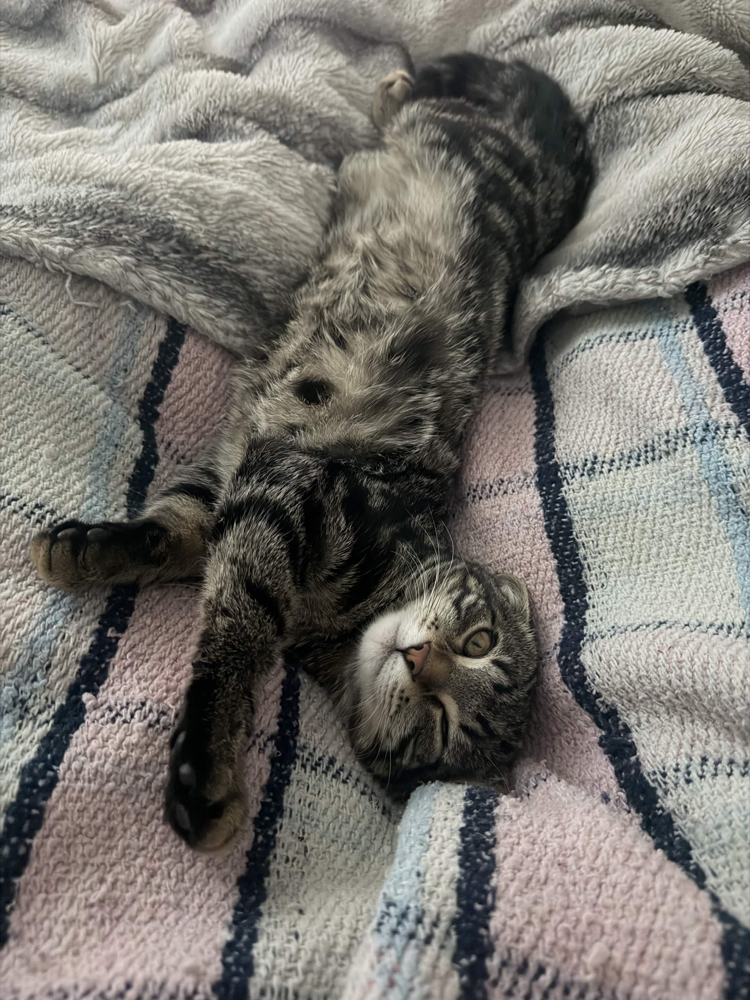

Greetings, everyone! I've finally decided to make my own blog! But instead of being hosted on platforms like tumblr or Blogspot (god I miss 2010...), I'm hosting it all by myself! Very fun times, right? It feels like I'm a teenager all over again! :D
I only intend to use this to write down serious thoughts on certain topics, or to discuss new things. Yes, this does include stuff like the development of Guts & Blackpowder (and even Blue Mesa...). I will also include exclusive information regarding everything that I do!
Thanks for stopping by!
